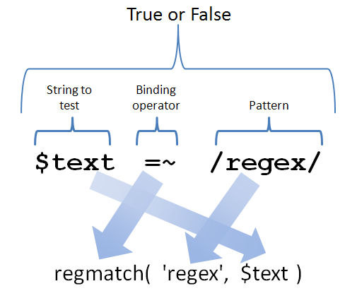

More on Numbers and Strings; More on Regular Expressions; More on Hashes
AAHCClick on A to make all fonts on the page smaller.
Click on A to make all fonts on the page larger.
Click on HC to toggle high contrast mode. When you move your mouse over
some bold words in high contrast mode, related words are automatically highlighted. Text is shown
in black and white.
Lesson Objectives
When you complete this lesson, you will be able to:
String and Number Literals
We've talked before about some of the escape sequences that can be used within strings; we'll go
through them in detail in a minute, but first, a refresher on
number literals. Suppose you are defining the speed of light in meters per second:
That's difficult to verify visually. It would be all too easy to omit a digit or include an unnecessary
one. If we were writing—rather than coding—a large number like the speed of light, or the
national debt, or O'Reilly's student base, we would put commas at every third digit, like
this:
But that won't work in Perl because the comma is already taken. (In a list context, the comma separates list
arguments, and in a scalar context—like this would be—it evaluates the argument on the left
and then returns the argument on the right. If you're in a hurry, you can use a comma in a one-liner to run
multiple statements after an and or an or conditional, instead of resorting to an
if block.)
But Perl does have a character you can use instead: the underscore:
This makes it much less difficult to verify that the number has the right magnitude.
Perl does not check to make sure you inserted underscores every third character; it is quite happy with
numbers like 299_79245_8, or 2_99_79_24_58, or even 2_9_9_7_9_2_4_5_8—this even works in floating
point numbers:
OBSERVE: inappropriate use of underscores
Perl lets you insert the underscore anywhere except at the beginning, and issues a warning if you have two
underscores in
a row or one at the end. Underscore helps you to verify large
numbers by emulating the comma for grouping digits in threes. You might think that it would be
useful when partitioning numbers in a social security number or a telephone number to reflect their
customary grouping, but there's a problem with that. The grouping would be lost as the value was
passed around (Perl does not remember the location of underscores) and both kinds of numbers are
really strings, not numbers; you don't do arithmetic on them,
so why store them as numbers?
You can also specify numbers in scientific notation with the exponent:
OBSERVE: Avagadro's Number
Don't put any spaces around the "E." You can use an upper-case E or a lower-case e.
In addition to integers and floating point numbers, there are other types of numeric literals in
the decimal base. Perl allows the specification of numbers in other bases as well:
OBSERVE: alternative bases
$signature = 0xfc45; # Hexadecimal
$mode = 0755; # Octal
$episode = 0b11001001; # Binary
Hexadecimal numbers are introduced by 0x, followed by one or more hexadecimal digits
in either upper or lower case. The prefix may not be capitalized to 0X.
Octal numbers are introduced by a leading zero followed by one or more octal digits (0
through 7). No letter 'O' follows the zero. The
reason for this apparent inconsistency is actually to be consistent with other languages, like C; the
decision dates back many years to when Perl needed to look familiar to programmers. This has
caused confusion for many novice Perl programmers; let's make sure it doesn't happen to you.
Run this one-liner. Type the code below in the Unix shell as shown:
INTERACTIVE SESSION:
cold:~$ perl -le '$x = "0454"; print $x+1; $x = 0454; print $x+1'
455
301
cold:~$
The first $x is a string. Perl's rule for interpreting
numbers in a string is based solely on the specification for a decimal number. Leading zeroes are
permitted because we might want to format reports with leading zeroes, and people would freak out if
Perl suddenly interpreted some of those numbers as octal. The second $x is a literal number
(hard-coded in the program); there is no reason to put a leading zero in front of it, therefore Perl uses
the leading zero to denote that it's an octal number.
String Escapes: There are a number of escape sequences you can put inside of double-quoted strings.
You're already familiar with \n (newline) and \t (tab); there are
several others:
| \r | Carriage return (more on this in the next lesson) |
| \f | Form feed (hardly useful any more) |
| \a | Alarm (ring the bell) |
| \e | The escape character (ESC) |
| \b | Backspace |
| \nnn | Octal character nnn (each n is a digit from 0 through 7) |
| \xnn | Hexadecimal character nn (each n is a digit from 0 through F,
uppercase or lowercase) |
| \cc | Control character c (e.g., \cG is Control-G) |
This list is incomplete; it does not contain Unicode characters, but they are outside the scope of
this course. The complete list can be found in perldoc perlop.
These escape sequences only count when they are inside "double-quoted" strings, not 'single-quoted' strings.
Some escape sequences don't get turned into control characters, but instead cause Perl to change what
follows them:
- \l: Lowercase next character.
- \L: Lowercase all characters until end of string or the sequence \E.
- \u: Uppercase next character.
- \U: Uppercase all characters until end of string or the sequence \E.
- \Q: Quote all regex metacharacters so they match only literally until end of string or the
sequence \E.
Escape sequences that don't have another meaning inside a regular expression can be used in a regex.
So, while \b can't be used to mean backspace in a regex (it's an anchor),
\0nn and others can. Let's see how that works. Type the code below in the Unix shell as shown:
INTERACTIVE SESSION:
cold:~$ perl -le 'print "Ding" if "\a" =~ /\cG/'
Ding
cold:~$
Character Functions
There are a couple of character functions that you should know. They aren't often used, but when the
time comes, you'll be glad you learned them.
chr( number ) returns the character with a numerical value that is
number. For example, chr( 65 ) is the letter 'A' (unless
you're running Perl on an EBCDIC system, in which case you have bigger problems, like remembering where
you left your time machine :-) ). You can use chr( number ) as yet another
mechanism for generating Unicode characters; it's also handy for getting at accented characters in the
ISO Latin-1 extended character set. Try it out in a one-liner by typing the code below in the Unix shell as shown:
INTERACTIVE SESSION:
cold:~$ perl -le 'printf "%o: %s\n", $_, chr foreach 0xA0 .. 0xFE'
It doesn't work right; nothing prints for every character. Welcome to the world of character
encodings and fonts. It's an unfriendly place. The command above will work most places, but not in the
special environment that we have for students. The assembly of shells, SSH connections, Java
applets, and browser windows that combine to make the environment work for you, means that we have to lie to
Perl a little to get the output we want; we tell it that the output stream is in UTF-8 (this is covered in
perldoc perlunitut, but be warned, this is a confusing and complicated topic). Modify the code in the Unix shell as shown:
INTERACTIVE SESSION:
cold:~$ perl -CO -le 'printf "%o: %s\n", $_, chr foreach 0xA0 .. 0xFE'
(FYI, that's the letter O, not a zero, after the big C.)
You can see here that the default variable for chr is, naturally enough,
$_. printf does not get a newline appended to it by -l,
unlike print, so we have to include it explicitly. Remember, we use
printf to output a number in an alternative base, like octal, hexadecimal,
or binary.
Having found the character code you want, you can then use one of the escape sequences from the
table above to print it out. Type the code below in the Unix shell as shown:
INTERACTIVE SESSION:
cold:~$ perl -CO -le 'print "Welcome to our Internet caf\351"'
Once again, if you try that on your own system, leave out the -CO.
ord( x ) is the inverse of chr: it returns
the numeric value of the character x. (If you supply more than one character in the
string, Perl only looks at the first one.) Try it in a one-liner by typing the code below in the Unix shell as shown:
INTERACTIVE SESSION:
cold:~$ perl -le 'print ord "A"'
65
cold:~$
Number Functions
If you want to print a number in an alternative base, you use
printf and the appropriate format descriptor. But what about the inverse? For
example, suppose you read a hexadecimal string in from a core dump, how would you turn it into the
equivalent number?
Perl contains some handy functions for converting strings representing numbers in different bases.
hex( string ) converts a hexadecimal string to its number.
Try it in a one-liner by typing the code below in the Unix shell as shown:
INTERACTIVE SESSION:
cold:~$ perl -le 'print hex "af"'
175
cold:~$
Try some other hexadecimal strings in place of "af", like "0xdd"
and "DeadBeef".
oct( string ) converts an octal string to its corresponding number.
Try it in a one-liner by typing the code below in the Unix shell as shown:
INTERACTIVE SESSION:
cold:~$ perl -le 'print oct "43"'
35
cold:~$
The oct function can also convert strings with other radixes.
Try it in a one-liner by typing the code below in the Unix shell as shown:
INTERACTIVE SESSION:
cold:~$ perl -le 'print oct for qw(0b101001 0755 0xFAA)'
41
493
4010
cold:~$
split()
We've talked about split() before, but always suggesting that its argument determining how to split was a string.
In fact, it's a regular expression; we just happened
to use examples that only contained literal atoms.
split() is capable of far more than we've seen. This table describes the different uses of the split()
function:
| Form | Explanation |
|---|
| LIST = split( PATTERN, EXPR, LIMIT ) | Split EXPR on PATTERN at most LIMIT times, leaving the remainder in the last
element of LIST. |
| LIST = split( PATTERN, EXPR ) | Split EXPR on PATTERN, putting the results into LIST. |
| LIST = split( PATTERN ) | Split $_ on PATTERN. |
| LIST = split() | Split $_ on whitespace. |
Let's see some examples. Create split.pl as shown:
CODE TO TYPE: split.pl
#!/usr/bin/perl
use strict;
use warnings;
while ( <DATA> )
{
chomp;
my @tokens;
@tokens = split /[;:=]+\s*/, $_, 3;
print "split P, E, 3\t", markup( @tokens ), "\n";
@tokens = split /[;:=]+\s*/;
print "split P\t\t", markup( @tokens ), "\n";
@tokens = split;
print "split\t\t", markup( @tokens ), "\n"
}
sub markup
{
'|' . join( '|', @_ ) . '|';
}
__DATA__
Part: Cowling==; Cost: $71; Size: 48"
:peter:100:101:Peter Scott:/home/peter:/bin/tcsh:
The three virtues of a Perl programmer are: Impatience, Hubris, and Laziness - Larry Wall
 and run it. The output shows the list elements that
split() created for each input, delimited with vertical bars:
and run it. The output shows the list elements that
split() created for each input, delimited with vertical bars:
INTERACTIVE SESSION:
cold:~$ cd perl2
cold:~/perl2$ ./split.pl
split P, E, 3 |Part|Cowling|Cost: $71; Size: 48"|
split P |Part|Cowling|Cost|$71|Size|48"|
split |Part:|Cowling==;|Cost:|$71;|Size:|48"|
split P, E, 3 ||peter|100:101:Peter Scott:/home/peter:/bin/tcsh:|
split P ||peter|100|101|Peter Scott|/home/peter|/bin/tcsh|
split |:peter:100:101:Peter|Scott:/home/peter:/bin/tcsh:|
split P, E, 3 |The three virtues of a Perl programmer are|Impatience, Hubris, and Laziness - Larry Wall|
split P |The three virtues of a Perl programmer are|Impatience, Hubris, and Laziness - Larry Wall|
split |The|three|virtues|of|a|Perl|programmer|are:|Impatience,|Hubris,|and|Laziness|-|Larry|Wall|
split P, E, 3 ||
split P ||
split ||
cold:~/perl2$
The output is explained in detail here:
| split P, E, 3 | Part | Cowling | Cost: $71; Size: 48" |
| split P | Part | Cowling | Cost | $71 | Size | 48" |
| split | Part: | Cowling==; | Cost: | $71; | Size: | 48" |
| split P, E, 3 | | peter | 100:101:Peter Scott:/home/peter:/bin/tcsh: |
| split P | | peter | 100 | 101 | Peter Scott | /home/peter | /bin/tcsh |
| split | :peter:100:101:Peter | Scott:/home/peter:/bin/tcsh: |
| split P, E, 3 | The three virtues of a Perl programmer are | Impatience, Hubris, and Laziness - Larry Wall |
| split P | The three virtues of a Perl programmer are | Impatience, Hubris, and Laziness - Larry Wall |
| split | The | three | virtues | of | a | Perl | programmer | are: | Impatience, | Hubris, | and | Laziness | - | Larry | Wall |
The first column above uses P and E as abbreviations for the pattern and expression,
respectively. (The pattern is /[;:=]+\s*/ and the expression is
$_.)
Did you notice that __DATA__ can be used interchangeably with __END__?
Study that program, its output (as well as the list below) carefully until you understand how each line of
output was produced. You'll use the split function often, so make sure
you're comfortable with it.
There are many special cases in the operation of split, so many that when we
go through them, it may seem overwhelming. Don't worry—you'll get the hang of them. These special cases serve
to make the operation of split more intuitive, so in the end, you'll actually
have less to remember. Let's look at the
details of the operation of split.
- Empty leading fields are preserved; if I split "::abc:def" on /:/,
I'll get four elements in the list, the first two being empty.
- Empty trailing fields are deleted; if I split "abc:def::" on /:/,
I'll get two elements in the list, "abc" and "def".
- If all the fields end up being empty, they're all deleted. Type this into the Unix shell as shown:
INTERACTIVE SESSION:
cold:~/perl2$ perl -le 'print "-$_-" foreach split /[=;:%&]/, ";::=&%%"'
- Trailing empty fields are not deleted if a LIMIT is specified.
- If you want to make sure that you get all trailing empty fields and don't want to have to guess at a
large enough LIMIT, use any negative LIMIT, such as -1. That splits into
as many fields as it would if there were no LIMIT, but leaves in trailing empty fields.
- The empty regex (//) has a special meaning to split(): split
the string into its characters. Type this into the Unix shell as shown:
INTERACTIVE SESSION:
cold:~/perl2$ perl -le 'print for split //, "Intermediate Perl"'
- If you surround the pattern with grouping parentheses, Perl puts whatever matched the regex in the
output list, interwoven with the usual fields.
Let's take a look at that last rule in closer detail, because it describes something very useful: the
ability to save all the parts in between the output fields. Try this one-liner by typing this code into the Unix shell as shown:
INTERACTIVE SESSION:
cold:~/perl2$ perl -le 'print foreach split /(\W+)/, "Fred,Bill&Ted-Ten%Each...minimum\$100"'
Fred
,
Bill
&
Ted
-
Ten
%
Each
...
minimum
$
100
cold:~/perl2$
Sometimes what comes between the fields needs to be saved as well. This feature of
split lets you do it.
Hashes: each()
Now we'll look at a function that can make iterating through a hash a bit more
convenient. The each() function acts as an iterator that returns a
two-element list of a key and its corresponding value. Each time you call it, you'll get a new
(key,value) until you've gone all the way through the hash, at which point it returns the empty list.
(In scalar context, each() returns a key each time until it reaches the end, at
which point it returns undef. That won't be very useful.)
This can save us an extra step when we want to put the value in its own variable to save on typing.
Create each.pl as shown:
CODE TO TYPE: each.pl
#!/usr/bin/perl
use strict;
use warnings;
my (%description, %retail_price, %appearance);
my $MARKUP = 1.45;
while ( <DATA> )
{
next if /\AItem ID/;
my ($id, $desc, $cost, $color) = split /\s*\|\s*\$?/;
$description{$id} = $desc;
$retail_price{$id} = $cost * $MARKUP;
$appearance{$id} = $color;
}
while ( my ($id, $desc) = each %description )
{
printf "$desc : \$%.2f\n", $retail_price{$id};
}
__DATA__
Item ID|Description|Cost|Color
63784|Futon|$125.00|White
374895 | Tatami mat | $70.00 | Straw
273643 | Stone fountain | $210.00 | Gray
349875|Kimono|$743.00|Varies
and run it:
INTERACTIVE SESSION:
cold:~/perl2$ ./each.pl
Kimono : $1077.35
Tatami mat : $101.50
Futon : $181.25
Stone fountain : $304.50
cold:~/perl2$
We used the split's powerful regular expression to
deal with the inconsistent separator in the input data (sometimes it has space around it
and sometimes it doesn't), and to remove the dollar sign from the cost before multiplying it by
$MARKUP.
The impact of each() here is minimal (it saves us from typing
$description{$id}), but in certain programs, the
each function will be essential.
Alright then. Good job! We're really picking up steam! See you in the next lesson...
read()
Our final topic for this lesson is the read() function. This is
an input function, but it is
more primitive than the readline operator (<>).
Instead of reading until it gets to a newline, it reads a specified number of characters. Can you think
why that might be useful? Right—when reading binary data, the term we use for data that's not
line-oriented. Usually it doesn't look like text, either, since text usually has line breaks in it so
that people can read it. Binary files, like images, music, or proprietary document format files,
usually contain characters that are unprintable and make a mess on your screen if you accidentally
try to list them.
It's rare that you'd want to read such a file into Perl (without using a module that's specialized
to the task of parsing whatever format the file is in), but you need to know about read()
for such occasions. Because if you read a giant binary file in using <>,
you may use huge amounts of memory unnecessarily since that binary file may not contain any newline characters.
To do an interesting example of this requires that we read something from a binary file. This
image from earlier in the course will do.

We'll extract the width of the image from it. The PNG specification tells us it's near
the beginning, contained in the first four bytes after the string "IHDR." We can tell from the specification
that 50 bytes is more than enough
to read to make sure we've read in that part of the file. Create read_png.pl:
CODE TO TYPE:
#!/usr/bin/perl
use strict;
use warnings;
open my $fh, '<', '/software/Perl2/regmatch.png' or die "Couldn't read file: $!\n";
read $fh, my $buffer, 50;
$buffer =~ /IHDR(....)/ and print "Width = $1\n";
The read() function takes three arguments, the first being the filehandle to read from,
the second a scalar to put the data into, and the third the number of characters to read.
(Because we're not opening this file with a Unicode encoding, each character will be one byte long.)
and run it. The output should be:
INTERACTIVE SESSION:
cold:~/perl2$ ./read_png.pl
Width = ù
What happened? Because we're reading binary data, the width is also in binary; it's a 32-bit number. So
it came out to the terminal as junk. There's a way
we can look at it, using the Unix od utility, which will turn binary data into something we can read:
INTERACTIVE SESSION:
cold:~/perl2$ ./read_png.pl | od -c
0000000 W i d t h = \0 \0 001 371 \n
There you can see that the width is the four characters with octal values 0, 0, 1, and 371. We still need
to turn it into a number we can read. Perl's unpack function will do that. It allows
all kinds of conversions via conversion specifiers in a format string rather like printf
See the voluminous documentation for those specifiers in perldoc -f pack, which is the inverse function
(that could be used for turning numbers into binary). The one we want is %N: "An unsigned long (32-bit) in
"network" (big-endian) order." Edit read_png.pl:
CODE TO TYPE:
#!/usr/bin/perl
use strict;
use warnings;
open my $fh, '<', '/software/Perl2/regmatch.png' or die "Couldn't read file: $!\n";
read $fh, my $buffer, 50;
$buffer =~ /IHDR(....)/ and print "Width = ", unpack( "%N", $1 ), "\n";
and run it. The output should be:
INTERACTIVE SESSION:
cold:~/perl2$ ./read_png.pl
Width = 505
And we're done! (You can view that image locally to verify that it is indeed 505 pixels wide).
(If you really wanted to read PNG files, the proper approach would be to use the module Image::PNG;
this was just a simple example to illustrate read().)
Most people deal with binary data rarely if at all, so we are not going to explore the pack
function further, but feel free to read up on it if you might be one of those people who needs to read or write
binary data.
Once you finish this lesson, go back to the syllabus page by clicking on the page tab above and do
the assignments.